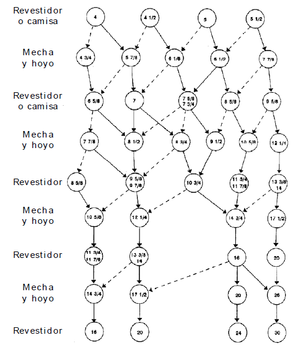

SELECCIÓN DE DIÁMETRO Y TIPO DE CONEXIÓN DE LOS REVESTIDORES
Una vez escogidas y ajustadas las profundidades de asentamiento de cada una de las sartas de revestimiento, se procede a seleccionar los diámetros de los mismos.
La selección del diámetro del revestidor se realiza según el diámetro del hoyo y la holgura entre el hoyo y el tubular, siendo las líneas continuas las opciones más viables de diseño. Así, se selecciona primero el diámetro del revestidor de producción y siguiendo paso a paso hacia abajo, se van seleccionando los diámetros del hoyo y del siguiente revestidor hasta llegar a la superficie.

Con el fin de reducir los costos de adquisición y aumentar la disponibilidad debido a la posibilidad de intercambio, PDVSA decidió normalizar las juntas, así como el proceso de selección a fin de mantener en un mínimo el número de tipos de juntas utilizadas, por lo cual la conexión de cada revestidor se llevará a cabo en base al árbol de decisión abajo mostrado,